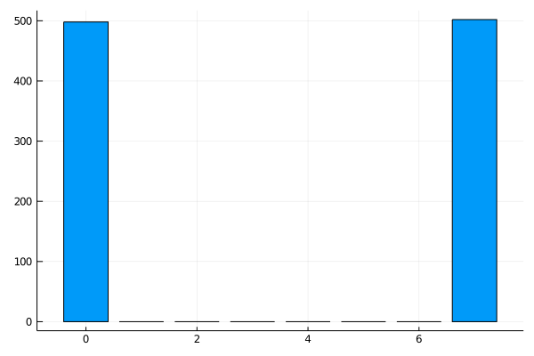

Yao.jlで量子エンタングルメントを理解したい（後編）
前回のベル状態を3量子ビット... 4量子ビットと拡張します。 こういう3量子ビット以上の状態をGHZ状態といいます（2を含めることもある模様）。 発見者のGreenbergerさん、Horneさん、Zeilingerにちなんだ名前ですね。
3量子ビットをもつれさせたい！
今回は新しい知識を必要としないので、早速、回路図を示していきます。じゃん。 階段状にCNOTゲートを配置していく感じです。 簡単。ではでは実装です。
GHZ_3circuit = chain(
3, # 3qubits
put(1=>H),
control(1,2=>X),
control(2,3=>X),
)
results = zero_state(3) |> GHZ3_circuit |> r->measure(r, nshots = 1000)
hist = fit(Histogram, Int.(results), 0:2^3)
GHZ3_graff = bar(hist.edges[1] .- 0.5, hist.weights, legend =:none)
ほんとに、新しい知識がないですね。結果はこんな感じ。
グラフより、\( |000 \rangle , |111 \rangle \)をそれぞれ大体500回ずつ、観測したことがわかります。 ちなみに、回路の構成は別のものもあります。 こちらを見るとわかると思います。 さて、2量子ビットのときと同じようになっていますが、数式で示すとどのようになるのでしょうか。
数式で見てみる
まず、ブラケットを用いて計算してみます。とはいえ、ほとんど前編のベル状態と変わりません。 初期状態は\(|000 \rangle \)であり、状態Aでは最上位ビット（一番左）にHゲートを作用しています。計算すると、 \[ |000 \rangle \xrightarrow{H_1} \frac{1}{ \sqrt{2}}(|0 \rangle + |1 \rangle) |00 \rangle \] となります。\( H_1 \)は第一量子ビットにH作用という意味を明示するために添え字をつけましたが、他ではしていない書き方だと思います。
状態Bでは前編と同じようにCNOTゲートを作用させています。 第一量子ビットが1だったら、第二量子ビットにXゲートを作用させるものですね。 よって、計算結果は \[ \frac{1}{ \sqrt{2}}(|0 \rangle + |1 \rangle) |00 \rangle \xrightarrow{CNOT_{1,2}} \frac{1}{ \sqrt{2}}(|00 \rangle + |11 \rangle) |0 \rangle \] となります。
状態CでもCNOTをBのように作用させます。Bと全く同じような計算をすることがわかると思います。 したがって、 \[ \frac{1}{ \sqrt{2}}(|00 \rangle + |11 \rangle) |0 \rangle \xrightarrow{CNOT_{2,3}} \frac{1}{ \sqrt{2}}(|000 \rangle + |111 \rangle)\] となり、グラフの結果は然りということとなりました。
4量子ビットもエンタングルメントしてみる
さて、4量子ビットでも同じように階段状にするだけで作れますが、ここはYao.jlのチュートリアルに基づいて進めていきましょう。 コードと結果は以下のとおりです。図は省略させていただきます。
GHZ_4circuit = chain(
4, # 4qubits
put(1=>X),
repeat(H, 2:4),
control(2, 1=>X),
control(4, 3=>X),
control(3, 1=>X),
control(4, 3=>X),
repeat(H, 1:4), # Hgate, 1:4 qubits
)
results = zero_state(4) |> GHZ_4circuit |> r->measure(r, nshots = 1000)
hist = fit(Histogram, Int.(results), 0:2^4)
GHZ4_graff = bar(hist.edges[1] .- 0.5, hist.weights, legend =:none)
repeatという新しい関数がでてきました。
前半で述べた通り、第一引数の量子ビット数の宣言は省略されています。
第二引数ではゲートの指定をし、第三引数でどの量子ビットに作用させるかを決めます。
これは、タプル(x, y)や上のように1:4、すなわち1から4のrange型でも大丈夫です。
結果も3量子ビットのときと同じようになっていますね。
計算してみた
そこそこ式が長くなった……途中上手く行かなくなって、行列とテンソル積を使ってしまったので、読み飛ばしても問題ないと思います。 むしろ、3量子ビットでやった階段方式でn量子ビットで計算できるようにするのが、重要だと思います。 ただ、下のようにに計算すると、量子計算の練習になるので時間があれば取り組んでみてください。 この計算するくらいなら、他の量子アルゴリズムやったほうが良いとは思いますが。計算が下のような感じです。
初期状態は\( |0000 \rangle \)です。 はじめに第一量子ビットにXを作用させているため反転して、\( |1000 \rangle \)となります。 つづいて、Hゲートを第2から4量子ビットに作用させています。よって、 \[ |1000 \rangle \xrightarrow{H_{2,3,4}} |1 \rangle \otimes \frac{1}{ \sqrt{2}}(|0 \rangle + |1 \rangle) \otimes \frac{1}{ \sqrt{2}}(|0 \rangle + |1 \rangle) \otimes \frac{1}{ \sqrt{2}}(|0 \rangle + |1 \rangle) \] \[ ~~~ = \frac{1}{\sqrt{2^3}} |1 \rangle (|0 \rangle + |1 \rangle) \otimes (|00 \rangle + |01 \rangle + |10 \rangle + |11 \rangle) \] \[ ~~~ = \frac{1}{\sqrt{2^3}} (|10 \rangle + |11 \rangle) \otimes (|00 \rangle + |01 \rangle + |10 \rangle + |11 \rangle) \] となります。イコールのあとの式は、次のCNOTのために整理しました。 \( \frac{1}{\sqrt{2}} \)を前にもってきて、第3、4量子ビットを展開した形です。
続いて、control(2, 1=>X),control(4, 3=>X)の2つを作用させていきます。
これを図解すると、以下のとおりです。矢印の方向に制御ビット→標的ビットとなっています。
よって、計算結果は
\[ \frac{1}{\sqrt{2^3}} (|10 \rangle + |11 \rangle) \otimes (|00 \rangle + |01 \rangle + |10 \rangle + |11 \rangle) \]
\[ \xrightarrow{CNOT(2,1),CNOT(4,3)}
\frac{1}{\sqrt{2^3}} (|10 \rangle + |01 \rangle) \otimes (|00 \rangle + |01 \rangle + |10 \rangle + |11 \rangle) \]
\[ = \frac{1}{\sqrt{2^3}} \Bigl( (|10 \rangle + |01 \rangle)(|00 \rangle + |01 \rangle) + (|10 \rangle + |01 \rangle)(|10 \rangle + |11 \rangle) \Bigr) \]
となります。1回目の計算結果では2つ目のカッコの内部は変わりません。
最後の式では、先程のように次のための結果の整理をしています。
1つ目の()を第三量子ビットに合わせて、展開した形です。
さらに、CNOT(3,1)を作用させると、 \[ \xrightarrow{CNOT(3,1)} \frac{1}{\sqrt{2^3}} \big( (|10 \rangle + |01 \rangle)(|00 \rangle + |01 \rangle) + (|00 \rangle + |11 \rangle)(|10 \rangle + |11 \rangle) \big) \] となります。第二項の一つ目の()内のビットが変わっています。
そして、CNOT(3,4)を作用させると、 \[ \xrightarrow{CNOT(3,4)} \frac{1}{\sqrt{2^3}} \big( (|10 \rangle + |01 \rangle)(|00 \rangle + |11 \rangle) + (|00 \rangle + |11 \rangle)(|10 \rangle + |01 \rangle) \big) \] となり、なんか綺麗な形がでてきます。
最後に \( H^{\otimes 4} \)を作用させます。 このHの右上についてるやつは同じものをテンソル積するときに用います。 量子アルゴリズムでは、回路全体にHを作用させることが多いため、\( H^{\otimes n} \)というのがよくでてきます。 ここの計算が上手く行かなくて、行列でゴリ押しました。誰か良い計算教えてください。以下の通りです。
2量子ビットに作用するHゲートを求めます。 \[ H \otimes H = \frac{1}{\sqrt{2}} \pmatrix{1 & 1 \\ 1 & -1} \otimes \frac{1}{\sqrt{2}} \pmatrix{1 & 1 \\ 1 & -1} \] \[= \frac{1}{2} \pmatrix{1 & 1 & 1 & 1 \\ 1 & -1 & 1 & -1 \\ 1 & 1 & -1 & -1 \\ 1 & -1 & -1 & 1 } \]
最後の形は\( (|00 \rangle + |11 \rangle), (|10 \rangle + |01 \rangle) \)の2つのみでした。 したがって、この2つに対して先程導出したHを作用した結果を求めれば良いことがわかります。よって、 \[ H^{\otimes 2} (|00 \rangle + |11 \rangle) = \frac{1}{2}\pmatrix{1 & 1 & 1 & 1 \\ 1 & -1 & 1 & -1 \\ 1 & 1 & -1 & -1 \\ 1 & -1 & -1 & 1 } \Biggl( \pmatrix{1 \\ 0 \\ 0 \\ 0} + \pmatrix{0 \\ 0 \\ 0 \\ 1} \Biggr) \] \[ = \frac{1}{2}\pmatrix{1 & 1 & 1 & 1 \\ 1 & -1 & 1 & -1 \\ 1 & 1 & -1 & -1 \\ 1 & -1 & -1 & 1 } \pmatrix{1 \\ 0 \\ 0 \\ 1} = \frac{1}{2} \pmatrix{2 \\ 0 \\ 0 \\ 2} = |00 \rangle + |11 \rangle \] \( |10 \rangle + |01 \rangle \)でも同様に計算します。 \[ H^{\otimes 2} (|10 \rangle + |01 \rangle) = \frac{1}{2}\pmatrix{1 & 1 & 1 & 1 \\ 1 & -1 & 1 & -1 \\ 1 & 1 & -1 & -1 \\ 1 & -1 & -1 & 1 } \Biggl( \pmatrix{0 \\ 0 \\ 1 \\ 0} + \pmatrix{0 \\ 1 \\ 0 \\ 0} \Biggr) \] \[ = \frac{1}{2}\pmatrix{1 & 1 & 1 & 1 \\ 1 & -1 & 1 & -1 \\ 1 & 1 & -1 & -1 \\ 1 & -1 & -1 & 1 } \pmatrix{0 \\ 1 \\ 1 \\ 0} = \frac{1}{2} \pmatrix{2 \\ 0 \\ 0 \\ -2} = |00 \rangle |11 \rangle \]
以上の2つの結果をもとに考えると、 \[ \frac{1}{\sqrt{2^3}} \big( (|10 \rangle + |01 \rangle)(|00 \rangle + |11 \rangle) + (|00 \rangle + |11 \rangle)(|10 \rangle + |01 \rangle) \big) \] \[ \xrightarrow{H^{\otimes 4}} \frac{1}{\sqrt{2^3}} \big( (|00 \rangle - |11 \rangle)(|00 \rangle + |11 \rangle) + (|00 \rangle + |11 \rangle)(|00 \rangle - |11 \rangle) \big) \] \[ = \frac{1}{\sqrt{2^3}} \big( |0000 \rangle - |1111 \rangle + |0000 \rangle - |1111 \rangle \big) = \frac{1}{\sqrt{2}}(|0000 \rangle - |1111 \rangle) \] となり、プログラムで実行したとおりの結果が得られることがわかります。 また、CNOTを階段状に構成するのと異なり、\(|1111 \rangle \)の位相が逆なのがわかります。
これまでのグラフを保存したい
前編も含めた全てのコードを実行している方は、以下の通りのコードを実行すると、これまでの結果を一つの画像にして保存できます。
A = plot(Bell_graff, GHZ3_graff, GHZ4_graff, legend =:none)
path_png = "program/julia_code/plot_practice/entanglement.png" #保存したいフォルダとファイル名
savefig(A, path_png)
path_pngでホームディレクトリを基準とした相対パスで画像ファイル名を決めます。
フォーマットはpngの他、svgなども対応しています。
あとがき
量子計算は行列を用いるより、ブラケットを用いたほうが良いでしょう。 ただ、それは暗記の下で成立しているので、ときには行列を使いそれを導く必要がありそうです。 あとなんで、Mathjax改行認識しないの。頼む、\eqarrayが使えないからどうにしてくれ。 次は京都の旅行の話書いたら、QFT書きます。それでは。